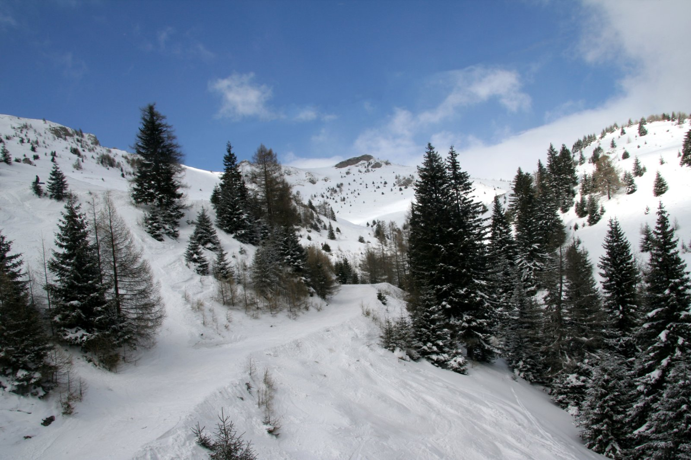
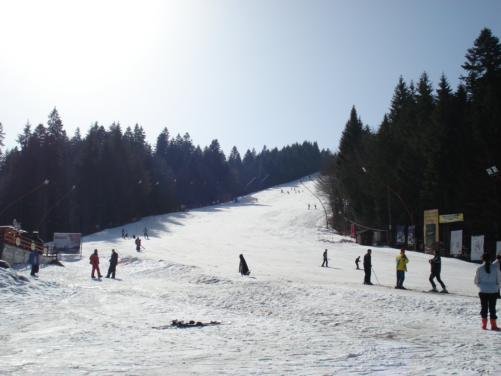
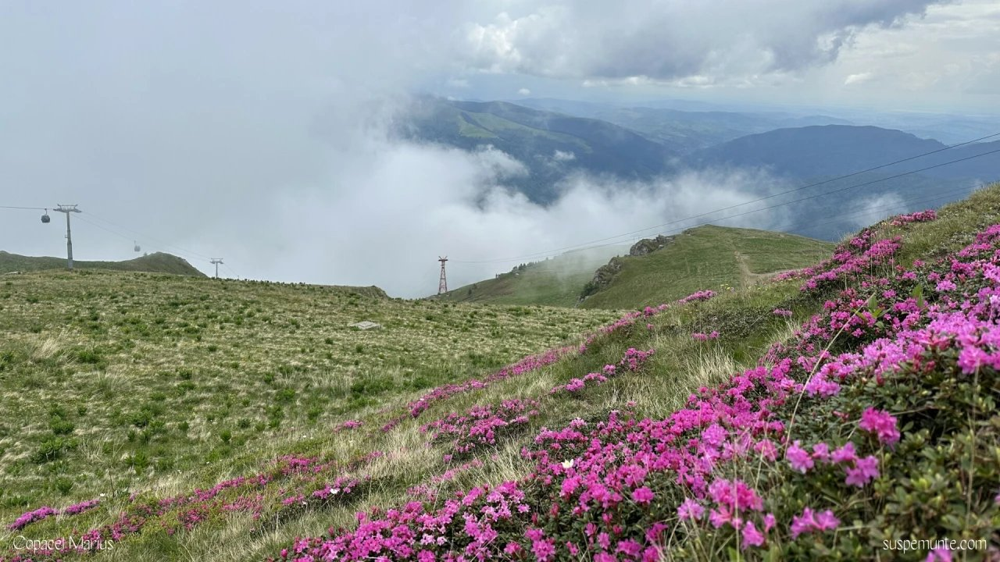

Iarna, Breaza devine tabăra de bază ideală pentru schi: aproape de pârtiile din Sinaia și Predeal, dar departe de aglomerație — cu o casă caldă în care revii seara.

Deși Breaza nu are pârtii proprii, poziția sa pe Valea Prahovei o face un punct de plecare excelent pentru un sejur la schi. Cazezi grupul la Casa Rodica, faci naveta zilnică spre domeniile schiabile și te bucuri seara de spațiu, liniște și un semineu numai al vostru.
Sinaia și Predeal sunt la 30–35 km, iar Azuga la circa 40 km — toate accesibile în mai puțin de o oră. Pentru grupuri mari și familii, o vilă integrală în Breaza este adesea mai comodă și mai economică decât mai multe camere de hotel în stațiune.
În plus, drumul de întoarcere spre Breaza te scoate din traficul aglomerat al stațiunilor și te aduce într-o zonă liniștită, unde parcarea și spațiul nu sunt niciodată o problemă.
Sinaia oferă cel mai variat domeniu din apropiere, cu acces din centrul stațiunii prin telegondolă și telecabină spre Cota 1400 și Cota 2000 — pârtii pentru toate nivelurile, unele cu nocturnă.
Predeal, cea mai înaltă localitate din România, are pârtiile din zona Clăbucet și Trei Brazi, potrivite mai ales pentru începători, copii și familii. Azuga completează oferta cu domeniul Sorica, apreciat de schiorii mai experimentați.

După o zi pe pârtie, te întorci la un semineu aprins, o cramă cu masă de poker și o sală de jocuri cu biliard și darts. Iarna este și sezonul sărbătorilor: Crăciunul și Revelionul pe livada acoperită de zăpadă au un farmec aparte.
Bucătăria complet utilată și foișorul cu grătar permit mese lungi în grup, iar spațiul generos înseamnă că toată lumea are loc — până la 20 de oaspeți.
Dacă în grup sunt începători sau copii, Predeal este cea mai blândă alegere: pârtii line, școli de schi și un ritm relaxat. Sinaia oferă și ea variante ușoare la Cota 1400, plus pârtii mai tehnice pentru cei avansați.
Echipamentul se poate închiria în stațiuni, iar o lecție introductivă face prima zi mult mai plăcută.
Nu toată lumea schiază toată ziua. Valea Prahovei oferă plimbări, cafenele și puncte panoramice, iar la Casa Rodica te așteaptă sala de jocuri, crama și semineul. Pentru zilele fără zăpadă bună, o drumeție ușoară sau o zi de relaxare la vilă sunt alternative excelente.

Sinaia și Predeal sunt la aproximativ 30–35 km, iar Azuga la circa 40 km — în jur de o oră de mers cu mașina.
Predeal, cu pârtiile din zona Clăbucet și Trei Brazi, este cel mai potrivit pentru copii și începători.
Da, în stațiuni există centre de închiriere pentru schiuri, plăci și echipament de protecție.
Casa Rodica
Până la 20 de oaspeți, semineu, bucătărie completă și trei zone de divertisment — perfect pentru o vacanță de iarnă cu prietenii sau familia.
Verifică disponibilitatea